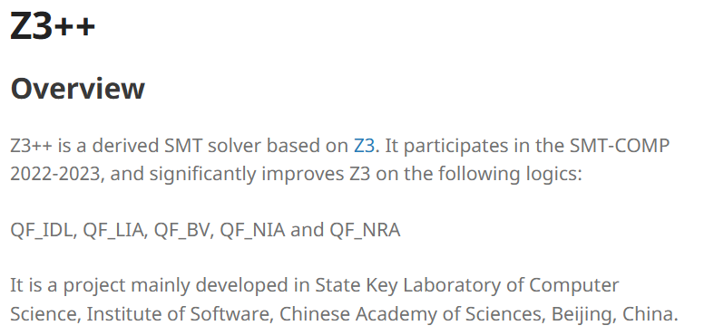
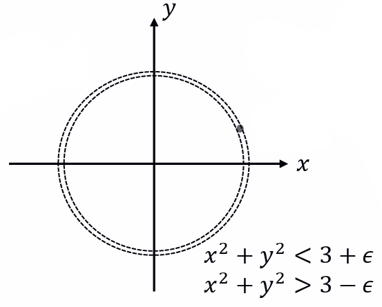
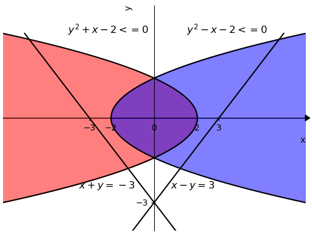
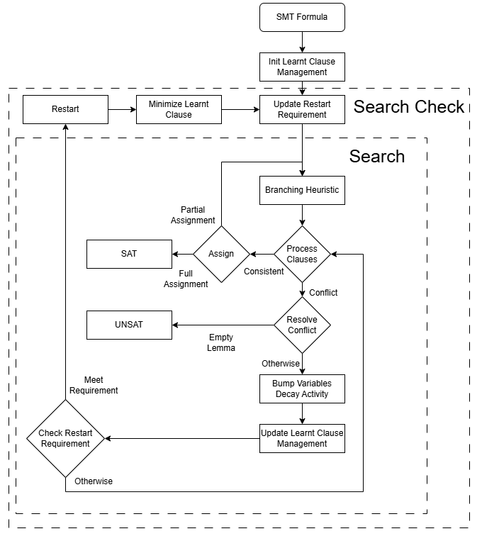

Zhonghan Wang
State Key Laboratory of Computer Science, Institute of Software, Chinese Academy of Sciences
Institute of Software, Chinese Academy of Sciences
4# South Fourth Street, Zhong Guan Cun
Beijing 100190
P.R. China
Email: wangzh@ios.ac.cn
I'm a graduate student at State Key Laboratory of Computer Science, State Key Laboratory of Computer Science, Institute of Software, Chinese Academy of Sciences. I got my Bachelor's degree at Nankai University.
My research interests are SMT Solving and Formal Verification. Here is my resume!
Education
2025 (Expected)
2021
Master of Computer Science, Institute of Software, Chinese Academy of Sciences (GPA: 3.7/4.0)
Bachelor of Electronic Engineering, Nankai University (GPA: 3.71/4.0)
Publications
Conference Paper
| C1 |
Efficient Local Search for Nonlinear Real Arithmetic VMCAI'2024
Local search has recently been applied to SMT problems overvarious arithmetic theories. Among these, nonlinear real arithmetic posesspecial challenges due to its uncountable solution space and potentialneed to solve higher-degree polynomials. As a consequence, existing workon local search only considered fragments of the theory. In this work,we analyze the difficulties and propose ways to address them, resultingin an efficient search algorithm that covers the full theory of nonlinearreal arithmetic. In particular, we present two algorithmic improvements:incremental computation of variable scores and temporary relaxation ofequality constraints. We also discuss choice of candidate moves and alook-ahead mechanism in case when no critical moves are available. Theresulting implementation is competitive on satisfiable problem instancesagainst complete methods such as MCSAT in existing SMT solvers.
@inproceedings{WZHNRA,
author = {Wang, Zhonghan and Zhan, Bohua and Li, Bohan and Cai, Shaowei},
title = {Efficient Local Search for Nonlinear Real Arithmetic},
year = {2024},
isbn = {978-3-031-50523-2},
publisher = {Springer-Verlag},
address = {Berlin, Heidelberg},
url = {https://doi.org/10.1007/978-3-031-50524-9_15},
doi = {10.1007/978-3-031-50524-9_15},
abstract = {Local search has recently been applied to SMT problems over various arithmetic theories. Among these, nonlinear real arithmetic poses special challenges due to its uncountable solution space and potential need to solve higher-degree polynomials. As a consequence, existing work on local search only considered fragments of the theory. In this work, we analyze the difficulties and propose ways to address them, resulting in an efficient search algorithm that covers the full theory of nonlinear real arithmetic. In particular, we present two algorithmic improvements: incremental computation of variable scores and temporary relaxation of equality constraints. We also discuss choice of candidate moves and a look-ahead mechanism in case when no critical moves are available. The resulting implementation is competitive on satisfiable problem instances against complete methods such as MCSAT in existing SMT solvers.},
booktitle = {Verification, Model Checking, and Abstract Interpretation: 25th International Conference, VMCAI 2024, London, United Kingdom, January 15-16, 2024, Proceedings, Part I},
pages = {326-349},
numpages = {24},
keywords = {Local search, Nonlinear arithmetic, SMT},
location = {London, United Kingdom}
}
|
Preprint
| P1 |
clauseSMT: A NLSAT-Based Clause-Level Framework for Satisfiability Modulo Nonlinear Real Arithmetic Theory arXiv
Model-constructing satisfiability calculus (MCSAT) framework has
been applied to SMT problems on different arithmetic theories. NLSAT,
an implementation using cylindrical algebraic decomposition
for explanation, is especially competitive among nonlinear real
arithmetic constraints. However, current Conflict-Driven Clause
Learning (CDCL)-style algorithms only consider literal information
for decision, and thus ignore clause-level influence on arithmetic
variables. As a consequence, NLSAT encounters unnecessary conflicts
caused by improper literal decisions.
In this work, we analyze the literal decision caused conflicts,
and introduce clause-level information with a direct effect on arithmetic variables. Two main algorithm improvements are presented:
clause-level feasible set based look-ahead mechanism and arithmetic
propagation based branching heuristic. We implement our
solver named clauseSMT on our dynamic variable ordering framework.
Experiments show that clauseSMT is competitive on nonlinear
real arithmetic theory against existing SMT solvers (CVC5, Z3,
YICES2), and outperforms all these solvers on satisfiable instances
of SMT(QF_NRA) in SMT-LIB. The effectiveness of our proposed
methods are also studied.
@misc{wang2024clausesmtnlsatbasedclauselevelframework,
title={clauseSMT: A NLSAT-Based Clause-Level Framework for Satisfiability Modulo Nonlinear Real Arithmetic Theory},
author={Zhonghan Wang},
year={2024},
eprint={2406.02122},
archivePrefix={arXiv},
primaryClass={cs.SC},
url={https://arxiv.org/abs/2406.02122},
}
|
| P2 |
DNLSAT: A Dynamic Variable Ordering MCSAT Framework for Nonlinear Real Arithmetic arXiv
Satisfiability modulo nonlinear real arithmetic theory (SMT(NRA))
solving is essential to multiple applications, including program verification,
program synthesis and software testing. In this context,
recently model constructing satisfiability calculus (MCSAT) has
been invented to directly search for models in the theory space. Although
following papers discussed practical directions and updates
on MCSAT, less attention has been paid to the detailed implementation.
In this paper, we present an efficient implementation of
dynamic variable orderings of MCSAT, called dnlsat.We show carefully
designed data structures and promising mechanisms, such
as branching heuristic, restart, and lemma management. Besides,
we also give a theoretical study of potential influences brought by
the dynamic variablr ordering. The experimental evaluation shows
that dnlsat accelerates the solving speed and solves more satisfiable instances than other state-of-the-art SMT solvers.
@misc{wang2024dnlsatdynamicvariableordering,
title={DNLSAT: A Dynamic Variable Ordering MCSAT Framework for Nonlinear Real Arithmetic},
author={Zhonghan Wang},
year={2024},
eprint={2406.18964},
archivePrefix={arXiv},
primaryClass={cs.SC},
url={https://arxiv.org/abs/2406.18964},
}
|
Research (Nonlinear Arithmetic Satisfiability Solving)
Generally speaking, my research includes designing both complete method (MCSAT) and incomplete method (Local Search) for SMT(NRA) solving (also called polynomial constraints). I like to borrow some innovative ideas from boolean satisfiability (SAT solving) into arithmetic satisfiability (SMT solving), by the conversion of boolean search space (2^n) to real search space (R^n, but well decomposed into sign-invariant cells).|

Portfolio: Z3-Plus-Plus in SMT-COMP (NRA Track) We noticed that the order of variables to be assigned greatly affects the performance on many instances, so we employ different solving flows, mainly including various heuristic arithmetic variable reordering strategies from CAD. Also, as DPLL(T) framework works particularly well for multilinear instances, we extend the time limit of DPLL(T) for such instances. As for NRA theory solving, we implement sample-cell projection in NLSAT explain module. Although the new operator is also a CAD-like projection operator which computes the cell (not necessarily cylindrical) containing a given sample such that each polynomial from the problem is sign-invariant on the cell, it is of singly exponential time complexity. Also we implement a feasible region consistency checker for clauses which are univariate and unit before the main search. The checker obtains the feasible region of variables through real root isolation and continuously takes the intersection of the regions. If the feasible region of some variable becomes empty, it means the instance is unsatisfiable. Otherwise, the obtained feasible regions are added to the instance as lemmas. |
|

Incomplete Method: Local Search for SMT(NRA) Solving Local search has recently been applied to SMT problems overvarious arithmetic theories. Among these, nonlinear real arithmetic posesspecial challenges due to its uncountable solution space and potentialneed to solve higher-degree polynomials. As a consequence, existing workon local search only considered fragments of the theory. In this work,we analyze the difficulties and propose ways to address them, resultingin an efficient search algorithm that covers the full theory of nonlinearreal arithmetic. In particular, we present two algorithmic improvements:incremental computation of variable scores and temporary relaxation ofequality constraints. We also discuss choice of candidate moves and alook-ahead mechanism in case when no critical moves are available. Theresulting implementation is competitive on satisfiable problem instancesagainst complete methods such as MCSAT in existing SMT solvers. |
|

Complete Method: Improving MCSAT for SMT(NRA) Solving Model-constructing satisfiability calculus (MCSAT) framework has been applied to SMT problems on different arithmetic theories. NLSAT, an implementation using cylindrical algebraic decomposition for explanation, is especially competitive among nonlinear real arithmetic constraints. However, current Conflict-Driven Clause Learning (CDCL)-style algorithms only consider literal information for decision, and thus ignore clause-level influence on arithmetic variables. As a consequence, NLSAT encounters unnecessary conflicts caused by improper literal decisions. In this work, we analyze the literal decision caused conflicts, and introduce clause-level information with a direct effect on arithmetic variables. Two main algorithm improvements are presented: clause-level feasible set based look-ahead mechanism and arithmetic propagation based branching heuristic. We implement our solver named clauseSMT on our dynamic variable ordering framework. Experiments show that clauseSMT is competitive on nonlinear real arithmetic theory against existing SMT solvers (CVC5, Z3, YICES2), and outperforms all these solvers on satisfiable instances of SMT(QF_NRA) in SMT-LIB. The effectiveness of our proposed methods are also studied. |
|

DNLSAT: A Dynamic Variable Ordering MCSAT Framework for
Nonlinear Real Arithmetic Satisfiability modulo nonlinear real arithmetic theory (SMT(NRA)) solving is essential to multiple applications, including program verification, program synthesis and software testing. In this context, recently model constructing satisfiability calculus (MCSAT) has been invented to directly search for models in the theory space. Although following papers discussed practical directions and updates on MCSAT, less attention has been paid to the detailed implementation. In this paper, we present an efficient implementation of dynamic variable orderings of MCSAT, called dnlsat.We show carefully designed data structures and promising mechanisms, such as branching heuristic, restart, and lemma management. Besides, we also give a theoretical study of potential influences brought by the dynamic variablr ordering. The experimental evaluation shows that dnlsat accelerates the solving speed and solves more satisfiable instances than other state-of-the-art SMT solvers. |
Talk
Jan. 15, 2024
Efficient Local Search for Nonlinear Real Arithmetic
London, UK
Work Experience
10/2022-05/2023
12/2023-03/2024
Research Intern at Alibaba Group
Research Assistant at Shenzhen Research Institute of Big Data, CUHK(SZ)
Awards
2023
2022
2022
2018
Second class Academic Scholarship
Second class Academic Scholarship
Two gold medals of Z3++ in SMT-COMP (main developer)
Outstanding Prize for Tianjin College Student Mathematical Competition (Ranked 17)
Misc
During my undergraduate study, I learnt about electronic science and did research in optical communications and devices. I changed my subject and direction when I went to graduate school, and now I am focusing on SMT solving and formal verification. Besides, I chose to stay in my country due to COVID-19. Sometimes we don't know where to go and what we will do, but the story is still going on.
You are the No.
th vistor of my homepage.